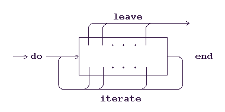

Rexx is used as a command language for operating, dialog, database management,
network systems, as a scripting language for automating and integrating applications in
these systems and as a macro language for arbitrary application programs. In this
article I would like to show that Rexx is an interesting high-level programming
language, too. This is an original introduction. I will concentrate only on features
of the language Rexx which are not included, in whole, in the others programming
languages.
Declarations or types are missing in Rexx programs because:
numeric digits instruction may be used to select the arbitrary precision of calculations,
which, for example, may calculate with 1000 or more significant digits.
How many digits are in N-factorial? And the first thirteen are? For N equals 16 we
compute 16-factorial, then we add of number of digits and finally we read the first 13
digits from the left. And for N equals 1000? The program UHLER displays
answer on a screen by the say instruction.
/* UHLER */ Factorial = NFACT(1000) say "Number of digits =" LENGTH(Factorial) say "The first thirteen =" LEFT(Factorial, 13)
"Number of digits =" is the blank
operator that concatenates two data strings together with a blank between them. The
program is so short because I used the built-in functions (a rich set of functions
supplied with the language) LEFT and LENGTH. But the function
NFAKT is not the built-in function. If anyone didn't write it, we had to
write this function ourself:
/* NFACT - computing of factorials */ N = ARG(1) numeric digits 3000 Nfactorial = 1 do J = 2 to N Nfactorial = Nfactorial * J end return Nfactorial
ARG(number) built-in function returns the value of a specific argument. If the text
of the NFACT function is saved on disk, then this file is an external function. When we
add to the text of the UHLER program following rows:
exit NFAKT: procedureand the text of the
NFACTNFACTexit
instruction terminates immediately the UHLER program. The
procedure
instruction, without the keyword expose, prevents the subroutine from
knowing anything about the caller's variables and vice versa. The UHLER
program displays on a screen:
Number of digits = 2568 The first thirteen = 4023872600770In the solution of the fourth exercise in the chapter 1.2.5 of The Art of Computer Programming, Vol. 1, Donald E. Knuth notes that Horace S. Uhler was the first who examined the exact value of 1000!. His result was published in the journal Scripta Mathematica 21 (1955), pp. 266-267, it begins: 402 38 726 00 770 ...
The ** (power) operator raises a number to a whole power, which may be positive
or negative. How many digits has nine to the ninth to the ninth, i.e. 9 ** (9 ** 9)?
When a Rexx program deals with words, it always means a list of blank-delimited tokens
in a string. A work with words is facilitated by built-in functions and by the parse
instruction. For example, the WORDS(string) function returns the
number words in string.
I would like to demonstrate the WORDS function by the modified
G. G. Berry's paradox:
The phrases of a language that refer to numbers can be ordered, alphabetically and
according to length. There will be a definite set of integers named by those phrases of
less than any given length. In particular there will be some integer which is the least
integer not namable in fewer than eleven words. The phrase "the least integer not
namable in fewer than eleven words" is the definition of a natural number. If in the
variable Sentence is stored this definition:
Sentence = "the least integer not namable in fewer than eleven words"
then the WORDS(Sentence) function returns the number of words in
Sentence. Check it with the say WORDS(Sentence) instruction.
I think, that the result compels everybody to re-count carefully number of words in
Sentence!
But what if a delimiter is a different character from blank (also called a space
character)? Suppose, that any character is stored in the Delimiter
variable. This character is the delimiter of words. Then following fragment of a
program writes all words of the Sentence variable in this common case:
Db = Delimiter || " "; Bd = REVERSE(Db) Sentence = TRANSLATE(Sentence, Db, Bd) do J = 1 to WORDS(Sentence) say TRANSLATE(WORD(Sentence, J), Db, Bd) end
|| operator to force concatenation without a blank. The
WORD(string, number) function returns a specific blank-delimited word from a string.
The REVERSE(string) function returns the input string with the characters reversed
end-for-end. Can you remember A Tale Of The Ragged Mountains by E.A.Poe?
... for Bedloe, without the e, what is it but Oldeb conversed!
The following program BEDLO displays OLDEB on a
screen.
/* BEDLO */ say REVERSE(LEFT(Bedloe, 5))
TRANSLATE(string, cipher_alphabet, plain_alphabet)
replaces every
occurence of a character from the plain_alphabet in the string by the
corresponding
character from the cipher_alphabet (i. e. simple substitution cipher). When in the
Parchment variable will stored the cryptogram of Captain Kidd starting with
a string
53++!305))6*; then the following instruction:
say TRANSLATE(Parchment, ,/* to be continued */ "adeghinortlsbpvwmuycf", "5!8346*+(;0)2.']9?:-1")
The interpret expression instruction executes one or more
instructions that are generated as the value of an expression. A useful instrument
for learning and teaching of the language Rexx is a simple variation on the program
REXXTRY from a manual:
/* USHER */ do forever say 'Enter Rexx instructions:' parse pull String_of_Instructions call INTERPRETATION String_of_Instructions end /* INTERPRETATION subroutine */ INTERPRETATION: procedure interpret ARG(1) return
parse pull String_of_Instructions instruction stores a line of input
read from the
standard input stream (assume the keyboard) to the String_of_Instructions
variable and
the interpret instruction this fragment executes. We can write:
if RANDOM(1, 2) = 1 then say "Head"; else say "Tail"
do until Exp = ""; say "?"; parse pull Exp; interpret "say" Exp; end
? 1 + (2 * 12) 25 ? "[" || SPACE(" Edgar Allan Poe ") || "]" [Edgar Allan Poe]
Exp variable, can come and go (using the
drop
Exp instruction) dynamically. Names of variables can be generated at run time,
using all power of expression evaluation of the language. The procedure instruction,
in the INTERPRETATION subroutine, creates a local environment and a name
of a variable is created and existed only during an execution of the subroutine.
The scope of variables is controlled by the procedure instruction. If a
routine is declared with the procedure instruction, only those variables
exposed using the expose instruction are available to the routine.
The first instruction of the INTERPRETATION subroutine
INTERPRETATION: procedure expose Global
/* A Descent Into The Maelström */ interpret ARG(1)
String_of_Instructions variable.
How can be ended the infinite loop in USHER?
F. M. Whyte's system of classification is used to describe the wheel arrangement of
conventional steam locomotives. In this system, the first number is the number of
leading wheels, and the last is the number of trailing wheels. The middle number (or
numbers) gives the number and arrangement of drivers. For instance the wheel arrangement
of the Santa Fe steam locomotive class 3700, built 1917, can be described as 4-8-2 (look
at the figure).
Please, write only one instruction to determine a number of wheels from the description
of the wheel arrangement stored in the Arrangement variable and to display
of a result on the screen.
Ken Thompson in his paper Reflection on Trusting Trust, CACM, August 1984, Vol. 27, No 8, pp. 761-763 writes: In college, before video games, we would amuse ourselves by posing programming exercises. One of the favorites was to write the shortest self-reproducing program... More precisely stated, the problem is to write a source program that, when ... executed, will produce as output an exact copy of its source. The solution in Rexx follows:
/**/say SOURCELINE(1)
SOURCELINE(number) function returns the specified line of the
program's source code. The SOURCELINE() function returns number of lines in
the program. Assume that we need display on a screen the message:
+-------------------+ | Important message | +-------------------+
ATTENTION we will appreciate after many changes of the
message.
/* ATTENTION +-------------------+ | Important message | +-------------------+ */ do J = 2 while SOURCELINE(J) <> "*/" say SOURCELINE(J) end
G. V. Bochmann argued a usefulness of this kind of control flow on the example:
Given a vector V of n integers, and an integer I; if I is one of the integers in V,
print its order in V; otherwise print "non in V" (G.V. Bochmann: Multiple Exits from a
Loop Without the GOTO, CACM, July 1973, Vol. 16, No 7, pp. 443-444).
Forteen years later F. Rubin submitted a letter-to-CACM form titled:
'GOTO Considered Harmful' Considered Harmful (CACM, March 1987, Vol. 30, No 3,
pp. 195-196) and reopened the discussion by showing a clearcut instance where
GOTOs significantly reduce program complexity. His example:
"Let X be an N x N matrix of integers. Write a program that will print the number
of the first all-zero row of X, if any."
May be in the year 2001 (1987 + 14) I will read a paper dealing with advantages of a
miserable traveling with GOTO that will include the following example: "Let X be an N
x N x N threedimensional array of integers. Find the number of the first all-zero matrix
of X, if any." The following ODYSSEY program shows the solution now.
/* ODYSSEY */ N = 100; X. = 0 X.1.1.1 = 1; X.2.94.15 = 1; X.3.16.8 = 1 X.4.5.2 = 1; X.5.16.30 = 0; X.6.86.3 = 1 do I = 1 to M do J = 1 to N do K = 1 to N if X.I.J.K <> 0 then iterate I end end leave I end if I<=M then say "The first all-zero matrix in X is" I else say "Non all-zero matrix is in X"
iterate I instruction causes control to pass to the top of an iterative
do-group
with the I control variable. The I control variable will be
incremented appropriately
and the terminating conditions will be tested as if the end instruction closing the
do-group had been encountered. The leave I instruction causes control to
pass to the
instruction following the end of an iterative do-group with the I control
variable.
These structures and their variants conform to programs for which transfers of
control
can only be made to the end or beginning of an enclosing control loop (see the
following
figure).

Rexx has one easy-to-use facility for building higher-level data structures such as
arrays - the compound variable. A name of compound variable has two parts: a stem and a
tail. A stem is like any other variable name except that it ends in a period. A tail is a
string of one or more symbols. When the tail is made up of more than one symbol, each
symbol is separated from the next by a period. When Rexx retrieves the value of a
compound variable it first generates a derived variable name. The name is derived by
replacing any simple variables in the tail name by their values. The value of the
compound variable is then the value associated with the derived name. You can set all
possible compound variables derived from a given stem by assigning a value to the stem,
for example
X. = 0
After setting a stem variable this way, a reference to any compound variable with that
stem to which you do not assign another value will return the value zero. Note, that
X
array in the ODYSSEY program is a sparse array, only six elements allocate
memory.
Given a document and a natural number K, display on a screen all words occur at least
K-times in the document. The following internal subroutine provides the answer:
/* K_TIMES subroutine */ K_TIMES: procedure expose Document K Times. = 0 do J = 1 to WORDS(Document) Oneword = WORD(Document, J) Times.Oneword = Times.Oneword + 1 if Times.Oneword = K then say Oneword end return
Times array using a non-numeric subscript. Note, that it does not have to declare the
size of the Times array.
It is a portable language across platforms.
Instructions do-(iterate, leave)-end, numeric, interpret, parse, built-in functions,
compound variables, recursion, allow complex algorithms to be expressed in simple
programs. Simple programs make useful prototypes.
I use Rexx as an environment for design and testing algorithms as in my article
MODIFIND.
Compound variables can represent many data structures quite naturally (one and
multidimensional arrays using a numeric or non-numeric subscript, structures, stacks and
queues, lists, symbol tables, graphs).
It is suitable for learning and teaching programming, compiler construction
(look at my implementation of the Universal Turing Machine)
etc. Album of Algorithms and Techniques proves that the
Rexx language is the suitable vehicle to writing useful, educational, and entertaining
routines, translating from excellent texts, in clean, succint, and uniform code.
All magics of the language REXX are results of a consistent application of only a few,
ingeniously chosen general features. Can you remember of The Fall Of The House
Of Usher?: "I have just spoken of that morbid condition of the auditory nerve which
rendered all music intolerable to the sufferer, with the exception of certain effects
of stringed instruments. It was, perhaps, the narrow limits to which he thus confined
himself upon the guitar, which gave birth, in great measure, to the fantastic
character of his performances."
1. The following HOWMANY program
/* HOWMANY */ say 9 ** (9 ** 9)
Arrangement variable is stored "4-8-2" then the following
instructrion displays the number of wheels, i.e. 14:
interpret "say -(-" Arrangement ")"
The first version of my "An Introduction ..." was published in the Czech journal
Softwarove noviny, Vol. 6, No. 12 (1995), 114-118. I used for translation my
emails in Archive of REXXLIST: REXX & E. A. Poe 98/10/09, Complements to
Words, words, words 98/10/26 and the English texts:
M. F. Cowlishaw: The REXX Language - A Practical Approach to Programming
Prentice-Hall, inc., Engelwood Cliffs, New Jersey 1985
J. Bentley: Associative Arrays
CACM, Vol. 28, No. 6 (June 1985), 570-576
F. Clarke: Words, words, words...
The RexxLA Newsletter, October 1998, Issue 199810
Helps from Personal REXX for Windows(TM)
Version 3.50, Quercus System
H. F. Ledgard, M. Marcotty: A Genealogy of Control Structures
CACM, Vol. 18, No. 11 (November 1975), 629-639
last modified 15th August 2021 Copyright © 1998-2021 Vladimír Zábrodský, Blansko, Czech Republic
zabrodsky(DOT)v(AT)seznam(DOT)cz